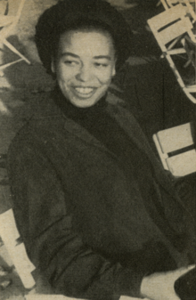

Davis was awarded a scholarship to Brandeis University in Waltham, Massachusetts, where she was one of three black students in her class. She encountered the Frankfurt School philosopher Herbert Marcuse at a rally during the Cuban Missile Crisis and became his student. In a 2007 television interview, Davis said, "Herbert Marcuse taught me that it was possible to be an academic, an activist, a scholar, and a revolutionary."She worked part-time to earn enough money to travel to France and Switzerland and attended the eighth World Festival of Youth and Students in Helsinki. She returned home in 1963 to a Federal Bureau of Investigation interview about her attendance at the communist-sponsored festival. During her second year at Brandeis, Davis decided to major in French and continued her intensive study of philosopher and writer Jean-Paul Sartre. She was accepted by the Hamilton College Junior Year in France Program. Classes were initially at Biarritz and later at the Sorbonne. In Paris, she and other students lived with a French family. She was in Biarritz when she learned of the 1963 Birmingham church bombing, committed by members of the Ku Klux Klan, in which four black girls were killed. She grieved deeply as she was personally acquainted with the victims. While completing her degree in French, Davis realized that her primary area of interest was philosophy. She was particularly interested in Marcuse's ideas. On returning to Brandeis, she sat in on his course. She wrote in her autobiography that Marcuse was approachable and helpful. She began making plans to attend the University of Frankfurt for graduate work in philosophy. In 1965, she graduated magna cum laude, a member of Phi Beta Kappa.
In Germany, with a monthly stipend of $100, she lived first with a German family and later with a group of students in a loft in an old factory. After visiting East Berlin during the annual May Day celebration, she felt that the East German government was dealing better with the residual effects of fascism than were the West Germans. Many of her roommates were active in the radical Socialist German Student Union (SDS), and Davis participated in some SDS actions. Events in the United States, including the formation of the Black Panther Party and the transformation of Student Nonviolent Coordinating Committee (SNCC) to an all-black organization, drew her interest upon her return.
Marcuse had moved to a position at the University of California, San Diego, and Davis followed him there after her two years in Frankfurt. Davis traveled to London to attend a conference on "The Dialectics of Liberation". The black contingent at the conference included the Trinidadian-American Stokely Carmichael and the British Michael X. Although moved by Carmichael's rhetoric, Davis was reportedly disappointed by her colleagues' black nationalist sentiments and their rejection of communism as a "white man's thing". She joined the Che-Lumumba Club, an all-black branch of the Communist Party USA named for revolutionaries Che Guevara and Patrice Lumumba, of Cuba and Congo, respectively. Davis earned a master's degree from the University of California, San Diego, in 1968.She earned a doctorate in philosophy at the Humboldt University in East Berlin.